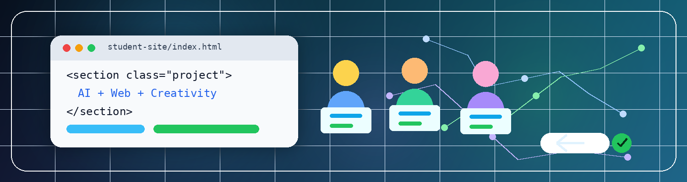

חדשנות לבית הספר
תוכנית רלוונטית לעולם העבודה העתידי, עם תוצר אמיתי שאפשר להציג לתלמידים, הורים וצוות חינוכי.
הצעת תוכנית לבית ספר
תוכנית מעשית לתלמידי כיתות י׳–י״ב: שימוש אחראי ב־AI, בניית אתר אישי, שמירת קוד ב־GitHub ופרסום בחינם באמצעות GitHub Pages.

למה זה חשוב
תוכנית רלוונטית לעולם העבודה העתידי, עם תוצר אמיתי שאפשר להציג לתלמידים, הורים וצוות חינוכי.
התלמידים לא רק שומעים על AI. הם בונים אתר, בודקים קוד, מתקנים ומשפרים.
שימוש ב־AI ככלי עזר, תוך בדיקה, הבנה, פרטיות וחשיבה עצמאית.
אפשר להתחיל בסדנה חד־פעמית לקבוצה אחת, ואז להחליט האם להרחיב לקורס מלא.
למי זה מתאים
התוכנית מיועדת לכיתות י׳–י״ב ומתאימה גם לתלמידים ללא ניסיון קודם בתכנות.
מה התלמידים יקבלו
בחירת נושא, קהל יעד ותוכן ראשוני לאתר.
HTML, CSS ו־JavaScript בסיסי לבניית אתר ראשון.
ניסוח בקשות ברורות, בדיקת תשובות ותיקון שגיאות.
שמירת קוד ב־GitHub ופרסום האתר דרך GitHub Pages.
מבנה התוכנית
אפשרות א׳
2–3 שעות
מתאים לבית ספר שרוצה לבדוק את התוכנית בצורה קצרה ומעשית.
אפשרות ב׳
4 מפגשים
מתאים לקבוצה שרוצה להגיע לתוצר אישי ברור בזמן קצר.
אפשרות ג׳
8 מפגשים
מתאים לבית ספר שרוצה תהליך עמוק יותר ותוצרים איכותיים יותר.
סילבוס מקוצר
מהו AI, איך משתמשים בו נכון, ומה הסיכונים בהסתמכות עיוורת.
בחירת נושא, קהל יעד ותוכן ראשוני לפרויקט.
מבנה עמוד, כותרות, טקסטים, תמונות וקישורים.
צבעים, פונטים, כפתורים, כרטיסיות והתאמה למובייל.
אינטראקציה בסיסית באתר: כפתור, שינוי תוכן או פעולה קטנה.
שמירת קוד ב־GitHub ופרסום האתר באמצעות GitHub Pages.
אחריות ובטיחות
כיתה עם מחשבים, אינטרנט יציב, מקרן, אישור שימוש בכלי AI/GitHub, רשימת תלמידים ואיש קשר מטעם בית הספר.
מנחה התוכנית
איש טכנולוגיה, פיתוח תוכנה, AI, סייבר ואוטומציה עסקית. התוכנית מועברת בגישה מעשית: מהרעיון הראשוני, דרך כתיבת הקוד והבנתו, ועד פרסום התוצר באינטרנט.
הדגש הוא על שימוש אחראי ב־AI, הבנה אמיתית של העבודה ותוצר שכל תלמיד יכול לפרסם ולהציג.
השלב הבא
ההמלצה היא להתחיל בסדנת פיילוט חד־פעמית, להציג את התוצרים, לקבל משוב מהתלמידים ומהצוות, ואז להחליט האם להרחיב לקורס קצר או מלא.